hierarchy
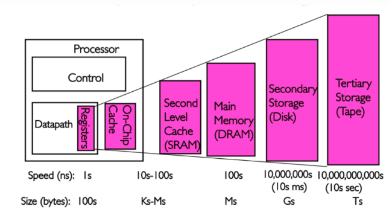
Program code and data has temporal and spatial locality. This means that, over short periods of time, there is a good chance that the same code or data gets reused.
For code this means that there are most likely loops in the code so that the same code gets executed over and over again (the perfect case for spatial locality对于刚被访问的数据，其相邻的数据在将来被访问的概率高). Data accesses are also ideally limited to small regions. Even if the memory used over short time periods is not close together there is a high chance that the same data will be reused before long (temporal locality对于刚被访问的数据，其本身在将来被访问的概率高).
Assume access to main memory takes 200 cycles and access to the cache memory take 15 cycles. Then code using 100 data elements 100 times each will spend 2,000,000 cycles on memory operations if there is no cache and only 168,500 cycles if all data can be cached. That is an improvement of 91.5%.
3.1 CPU Caches in the Big Picture
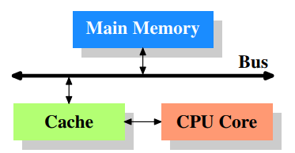
Figure 3.1 shows the minimum cache configuration. It corresponds to the architecture which could be found in early systems which deployed CPU caches. The CPU core is no longer directly connected to the main memory.
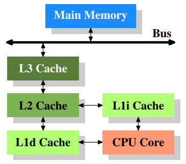
Figure 3.2 shows three levels of cache and introduces the nomenclature we will use in the remainder of the document. L1d is the level 1 data cache, L1i is the level 1 instruction cache, etc.
cpu cache
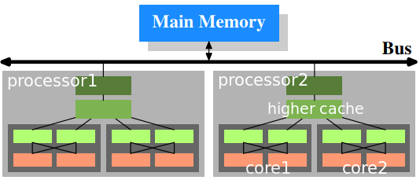
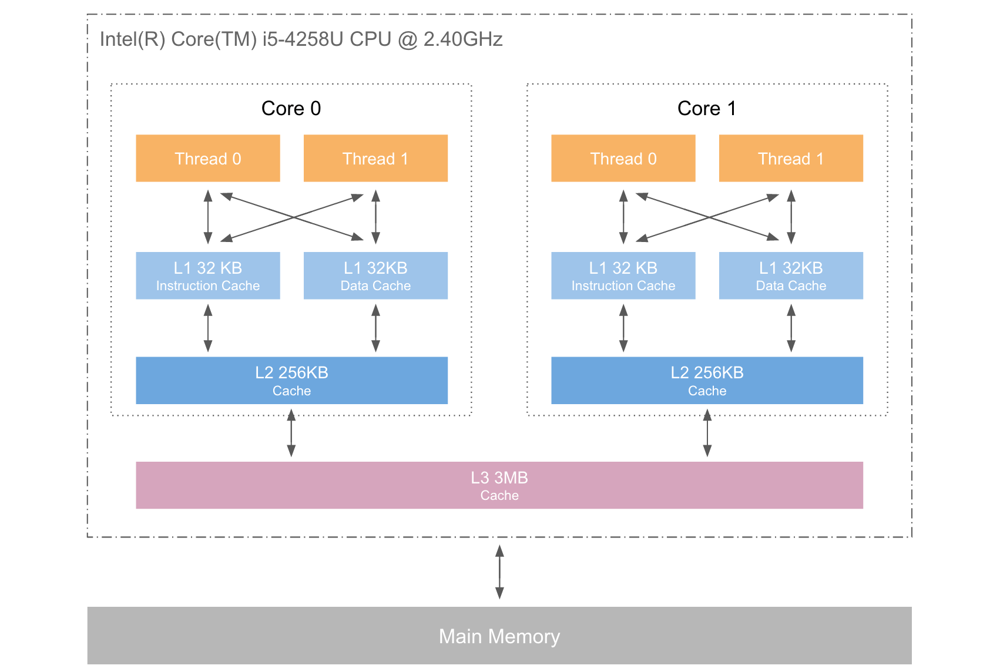
In this figure we have two processors, each with two cores, each of which has two threads. The threads share the Level 1 caches. The cores (shaded in the darker gray) have individual Level 1 caches. All cores of the CPU share the higher-level caches. The two processors (the two big boxes shaded in the lighter gray) of course do not share any caches. All this will be important, especially when we are discussing the cache effects on multiprocess and multi-thread applications.
3.2 Cache Operation at High Level
By default all data read or written by the CPU cores is stored in the cache. There are memory regions which cannot be cached but this is something only the OS implementers have to be concerned about; it is not visible to the application programmer. There are also instructions which allow the programmer to deliberately bypass certain caches. 默认情况从CPU cache中读写数据，内存中也有不能cache的部分，但这是由操作系统关心的，无关 programmer。也可以通过特定的指令，绕过 cache。
If the CPU needs a data word the caches are searched first. Obviously, the cache cannot contain the content of the entire main memory (otherwise we would need no cache), but since all memory addresses are cacheable, each cache entry is tagged using the address of the data word in the main memory. This way a request to read or write to an address can search the caches for a matching tag. The address in this context can be either the virtual or physical address, varying based on the cache implementation.
Since for the tag, in addition to the actual memory, additional space is required, it is inefficient to chose a word as the granularity of the cache. For a 32-bit word on an x86 machine the tag itself might need 32 bits or more. Furthermore, since spatial locality is one of the principles on which caches are based, it would be bad to not take this into account. Since neighboring memory is likely to be used together it should also be loaded into the cache together. In early caches these lines were 32 bytes long; nowadays the norm is 64 bytes. If the memory bus is 64 bits wide this means 8 transfers per cache line. DDR supports this transport mode efficiently.
When memory content is needed by the processor the entire cache line is loaded into the L1d. The memory address for each cache line is computed by masking the address value according to the cache line size. For a 64 byte cache line this means the low 6 bits are zeroed. The discarded bits are used as the offset into the cache line. The remaining bits are in some cases used to locate the line in the cache and as the tag. In practice an address value is split into three parts. For a 32-bit address it might look as follows:
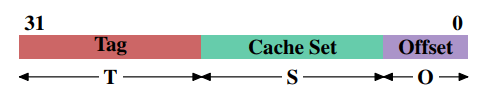
With a cache line size of $2^O$ the low $O$ bits are used as the offset into the cache line. The next $S$ bits select the “cache set”.
For now it is sufficient to understand there are $2^S$ sets of cache lines. This leaves the top $32−S−O = T$ bits which form the tag. These $T$ bits are the value associated with each cache line to distinguish all the aliases(All cache lines with the same S part of the address are known by the same alias) which are cached in the same cache set. The $S$ bits used to address the cache set do not have to be stored since they are the same for all cache lines in the same set. The $S$ bits used to address the cache set do not have to be stored since they are the same for all cache lines in the same set.
When an instruction modifies memory the processor still has to load a cache line first because no instruction modifies an entire cache line at once (exception to the rule: write-combining as explained in section 6.1). The content of the cache line before the write operation therefore has to be loaded. It is not possible for a cache to hold partial cache lines. A cache line which has been written to and which has not been written back to main memory is said to be “dirty”. Once it is written the dirty flag is cleared. 当instruction修改memory时候，仍然需要load cache line。已经被written但是并没有被写会 memory 的 cache line，会被成为 “dirty”。一旦被写回 memory，那么 dirty flag 就会被 cleard。
cache coherency:
MESI
- A dirty cache line is not present in any other processor’s cache.
- Clean copies of the same cache line can reside in arbitrarily many caches.
Costs associated with cache hits and misses
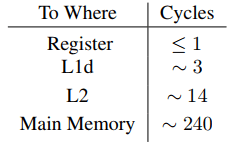
For the on-die L2 cache a large part (probably even the majority) of the access time is caused by wire delays. This is a physical limitation which can only get worse with increasing cache sizes. Only process shrinking (for instance, going from 60nm for Merom to 45nm for Penryn in Intel’s lineup) can improve those numbers. 片上 L2 cache 的瓶颈在wire delay上，只有缩小尺寸才能改善，比如从 60nm 工艺变成 45nm 工艺。
CPU Cache Implementation Details
Associativity
- Fully Associative Cache：
数据 A 可存放在 cache 的任意位置。 设计复杂，特别当 cache size 很大时，硬件成本非常之高。
It would be possible to implement a cache where each cache line can hold a copy of any memory location.
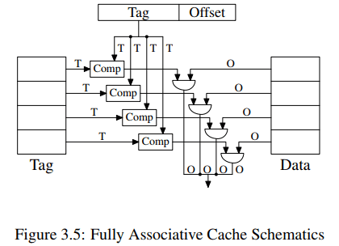 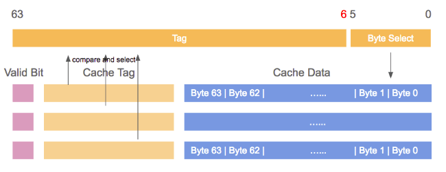
To access a cache line the processor core would have to compare the tags of each and every cache line with the tag for the requested address. The tag would be comprised of the entire part of the address which is not the offset into the cache line (that means, S is zero).
Given a 4MB cache with 64B cache linesthe cache would have 65,536 entries. To achieve adequate performance the cache logic would have to be able to pick from all these entries the one matching a given tag in just a few cycles.
Fully associative caches are practical for small caches (for instance, the TLB caches on some Intel processors are fully associative) but those caches are small, really small. We are talking about a few dozen entries at most.
- Direct-Mapped Cache
数据 A 在 cache 的存放位置只有固定一处。从设计结构看，数据所在cache line，直接由 Set 决定，这样对应的Tag就只能放置在Set所决定的位置（拥有相同Set的data只能放置在相同的位置）。而不能如 Fully 那样放在任意cache line。这是由设计结构决定的。直接后果就是当 program 使用的 memory 并不 evenly 分布时候，某些 cache line 会被过度使用的同时，另一些可能一直空着，所以容易产生碰撞，最终降低 cache 的命中率，影响性能。
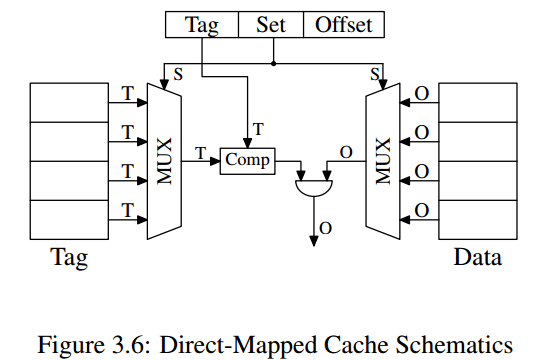 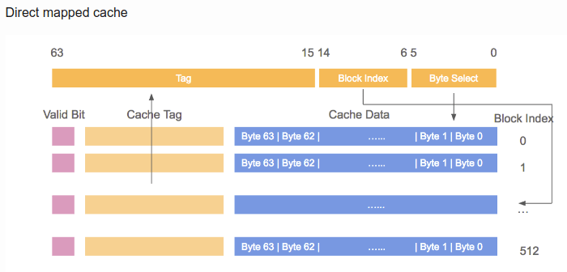
It requires exactly one comparator, one multiplexer (two in this diagram where tag and data are separated, but this is not a hard requirement on the design), and some logic to select only valid cache line content).
The number of transistors in a simple multiplexer grows with O(log N), where N is the number of cache lines.
This is tolerable but might get slow, in which case speed can be increased by spending more real estate on transistors in the multiplexers to parallelize some of the work and to increase the speed.
It has a drawback: it only works well if the addresses used by the program are evenly distributed with respect to the bits used for the direct mapping. If they are not, and this is usually the case, some cache entries are heavily used and therefore repeated evicted while others are hardly used at all or remain empty.
- N-Way Set-Associative Cache:
数据 A 在 cache 的存放位置可以有 N 处。同样的Set可以同时放多个Tag的data，由N决定。
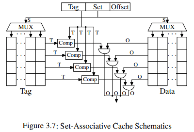 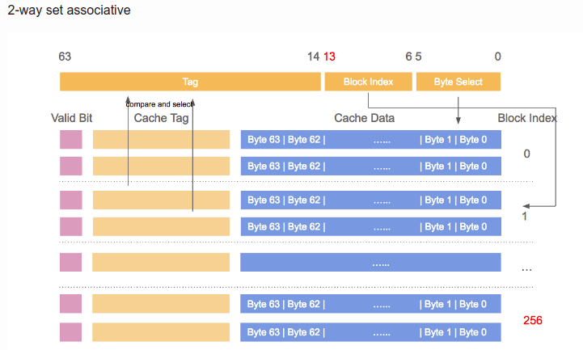
结构图中，同一Set对应图中同一列，并且此结构图是4 way 的（way是行）。我PC的cache配置，L2 cache 256K, 8-way Set-associative, 512个set，cache line 64B。每个方块对应 cache Line 大小 64，所以总 cache 大小是 rowcolsize_of_one_cell = 8（way） × 512（Set size）× 64B = 256KB。符合我的配置参数。这样的话，由 Set 和 Offset 组成的 (9+6) 15bit ，决定了 地址会每隔 $2^15$，即32768 Byte 数据，就落在cache 的同一个 set 中。当一个 Set 被选中，那么 N-way 指向的 N 个 cache line address 需要同时被比较，以确定data 是否在 cache 中。
A set-associative cache combines the good features of the full associative and direct-mapped caches to largely avoid the weaknesses of those designs.cd
The tag and data storage are divided into sets, one of which is selected by the address of a cache line. This is similar to the direct-mapped cache. But instead of only having one element for each set value in the cache, a small number of values is cached for the same set value. The tags for all the set members are compared in parallel, which is similarr to the functioning of the fully associative cache.
Today processors are using associativity levels of up to 24 for L2 caches or higher. L1 caches usually get by with 8 sets.
we can use sudo dmidecode -t cache cmd to see configuration of cache.
1 | ... |
cache 命中率：
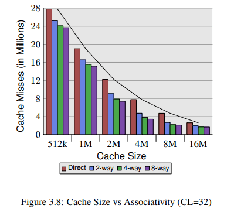
we can see that associativity can indeed help to reduce the number of cache misses significantly.
In general, increasing the associativity of a cache above 8 seems to have little effects for a single-threaded workload. With the introduction of hyper-threaded processors where the first level cache is shared and multi-core processors which use a shared L2 cache the situation changes. Now you basically have two programs hitting on the same cache which causes the associativity in practice to be halved (or quartered for quad-core processors). So it can be expected that, with increasing numbers of cores, the associativity of the shared caches should grow. Once this is not possible anymore (16-way set associativity is already hard) processor designers have to start using shared L3 caches and beyond, while L2 caches are potentially shared by a subset of the cores.
Measurements of Cache Effects
使用一个链表来测试 Cache 影响。
1 | struct l { |
如果 NPAD = 7。在 32bit 机器上，每个 element 大小 32byte，在 64bit 机器上，element 大小 64byte。
Single Threaded Sequential Access
测试环境：64bit机器，16KB L1d，1MB L2
纵轴是 CPU Cycle。Y–axis shows the average number of CPU cycles it takes to process one element;
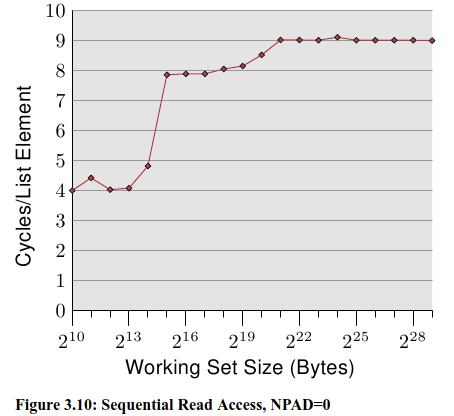
可以看到图上有三个段：
- Up to a working set size of $ 2^{14}$ bytes. （L1d影响）
- From $2^{15}$ bytes to $2^{20}$ bytes.（L2影响）
- From $2^{21}$ bytes and up.
We do not see sharp edges in the transition from one level to the other because the caches are used by other parts of the system as well and so the cache is not exclusively available for the program data. Specifically the L2 cache is a unified cache and also used for the instructions.
第二段，当L1d的大小不足够 hold all data 的时候，需要 L2 存储。但是从之前我们可以看到 L2 的 access time 需要约 14 cycle，这里却只需要 9 cycle 左右。这是因为 CPU 有一个 prefetch 的操作，即当开始使用一个新的 cache line 的时候，它已经被 cache 一部分了。
而 prefetch 的作用，在 working set 超过 L2 大小的时候，尤其看得见。之前说过，memory access 需要 200+ cycle，只有在有效的 prefetching下，才可能维持住 9 cycle 的 access time。
在第三段中，prefetch起到了非常好的作用。将之前所说的 main memory access time 从 200+ 降到了 9。
下面看同样working set测试下，不同的 element 大小对时间影响：
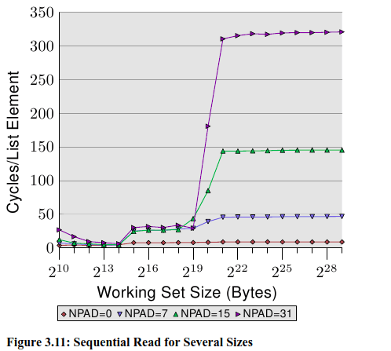
element size 越大（NPAD越大），说明 working set 的 element 个数越少。同时意味着，每个 element 之间的 distance 变大了。在上面的四个测试环境下，distance 是 0, 56, 120, 248 byte。（NPAD×8）
从上面图中，仍然可以看到 cache 对 access time 的影响，仍然可以看到被分成三段。只不过随着 distance 增加，access time 的尺度增长的越来越快。
在第二段中（working set size 小于 L2 size），可以看到 L2 的 access time 已经在 28 左右了。说明 CPU 的 prefetch (from L2 into L1d) 没有起到作用。当 NPAD=7，即一个数据 64B，每读一个数据，就要 load 一个新的 cache line；而 NPAD=0，一个数据4B，一个 cache line 可以存 8 个数据，那么 loop 循环 8 次以后，才需 load 下一个 cache line，所以 prefetch logic 可以 load 一部分 element（NPAD=0时）。因为prefetch 不能 load 整个 next cache line，所以在 element 过大的时候，L2 到 L1d 的 prefetch 不再起作用。 每次都需要从L2中 load 数据。
第三段中，working set 超过了L2 capacity，prefetch 更起不了作用。
另外一个导致 access time slowdown 的原因是TLB cache 的misses。The TLB cache is quite small since it has to be extremely fast. If more pages are accessed repeatedly than the TLB cache has entries for the translation from virtual to physical address has to be constantly repeated. This is a very costly operation. With larger element sizes the cost of a TLB lookup is amortized over fewer elements. That means the total number of TLB entries which have to be computed per list element is higher. 当 element size 过大，那么 每次 TLB 查找获得的 element 个数就少了，意味着间隔更少的元素，就要进行一次 新的page table 查找以更新 TLB cache，从而 耗时/element 大幅度增加。
- 下面观察 TLB 对 access time 的影响：*
use NPAD=7 for elements which occupy one entire cache line
place each list element on a separate page. The rest of each page is left untouched and we do not count it in the total for the working set size
The consequence is that, for the first measurement, each list iteration requires a new cache line and, for every 64 elements, a new page. For the second measurement each iteration requires loading a new cache line which is on a new page.
第一个实验，每次 iteration a new element 就要 fetch 一个 new cache line，每 64 个 fetch 一个新 page。
第二个实验，每次 iteration a new element 就要 fetch 一个 new cache line，每 1 个 fetch 一个新 page。
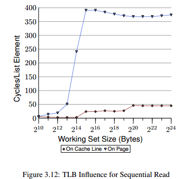
We see the distinct steps showing the sizes of the L1d and L2 caches. The second curve looks radically different. The important feature is the huge spike starting when the working set size reaches $2^{13}$ bytes. This is when the TLB cache overflows. With an element size of 64 bytes we can compute that the TLB cache has 64 entries（$2^{13}$开始溢出，说明$2^{12}$正好填满 TLB，那么$2^{12}$ byte 数据，总共有 64byte 的 element 64 个，因为这里的测试条件下，每个 element 都会请求一个新的page，所以 TLB 的entries number 是 64）. There are no page faults affecting the cost since the program locks the memory to prevent it from being swapped out.
下面观察 prefetch 的影响
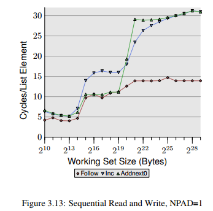
- The element width is in all cases 16 bytes. The first line is the now familiar list walk which serves as a baseline.
- The second line, labeled “Inc”, simply increments the pad[0] member of the current element before going on to the next. （将当前pad[0] 增加1）
- The third line, labeled “Addnext0”, takes the pad[0] list element of the next element and adds it to the pad[0] member of the current list element （将下一个 element 的 pad[0] 加到当前的 pad[0] 上）
The na¨ıve assumption would be that the “Addnext0” test runs slower because it has more work to do. Before advancing to the next list element a value from that element has to be loaded. This is why it is surprising to see that this test actually runs, for some working set sizes, faster than the “Inc” test. The explanation for this is that the load from the next list element is basically a forced prefetch. Whenever the program advances to the next list element we know for sure that element is already in the L1d cache. As a result we see that the “Addnext0” performs as well as the simple “Follow” testas long as the working set size fits into the L2 cache. （为什么第二段在L2 cache 的时候，Addnext0会比 inc 快呢）
The “Addnext0” test runs out of L2 faster than the “Inc” test, though. It needs more data loaded from main memory. This is why the “Addnext0” test reaches the 28 cycles level for a working set size of 2 21 bytes. The 28 cycles level is twice as high as the 14 cycles level the “Follow” test reaches. This is easy to explain, too. Since the other two tests modify memory an L2 cache eviction to make room for new cache lines cannot simply discard the data. Instead it has to be written to memory（所以就会有读写，这两次memory access，所以时间是两倍）. This means the available bandwidth on the FSB is cut in half, hence doubling the time it takes to transfer the data from main memory to L2.
to be continue…